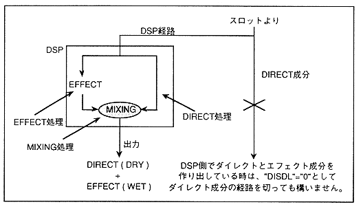

* Direct component and effect component
∙ When effects are applied to the sound, the sound without effect (dry) and the sound with effect (wet) are mixed with an appropriate balance according to each scene. Since the installed effect program is divided into dry and wet inside the DSP and finally mixed, there is no need to output the direct component when creating dry and wet components in the DSP. This can be disabled by setting DISDL to "0". Figure 4.54 shows the direct component and effect component paths.
Figure 4.54 Path of direct component and effect component

When rewriting the DSP program, the DSP operation becomes unstable, and the sound is not pronounced correctly from "EFREG". Set "EFSDL" to "0H" so that no sound is output.